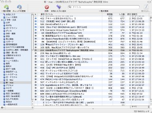

2ペインと3ペインの違いについて
2ペインと3ペインの違いについて
ペイン（pane）とは、何かを表示する領域のことを指しています。2ペイン、3ペインとは、一つのウインドウが2つ、または3つの領域に区切られていることを意味しています。
3ペイン表示は、一つのウインドウでスレッド一覧、スレッドの内容、掲示板リストを一覧できます（下図）。例えば、「マカー用。」や「Mail」のインターフェースと似ています：

2ペイン表示では、スレッドの内容を別のウインドウで開くことになります。このメリットは同時にいくつものスレッドの内容を表示させておくことができる点です。例えば、「MacMoe」や「Fuuun」のインターフェースと似ています：

BathyScaphe をインストールした直後は3ペイン表示の状態になっています。2ペインと3ペインのどちらを使うかは完全に個人の好みの問題ですから、迷っている場合は両方のモードを試してみることをおすすめします。
- 3ペインと2ペインを切り替えるには、スレッド一覧とスレッドの内容表示領域の境界部分をダブルクリックします。
- 3ペイン表示のとき、スレッド一覧とスレッドの内容表示領域を縦に分割するか、横に分割するかを選択できます。「表示」メニューの「ブラウザの配置」サブメニューから好きな方を選びます。
- 2ペイン表示のとき、スレッドの内容を表示するには、スレッド名をダブルクリックします。
ヒント：2ペイン表示のとき、スレッドを選択して return キーを押してスレッドを表示させたいことがあります。そのためには、BathyScaphe の設定ファイルをカスタマイズする必要があります。方法については以下のページを参照してください：
http://homepage.mac.com/tsawada2/customize_plist.html